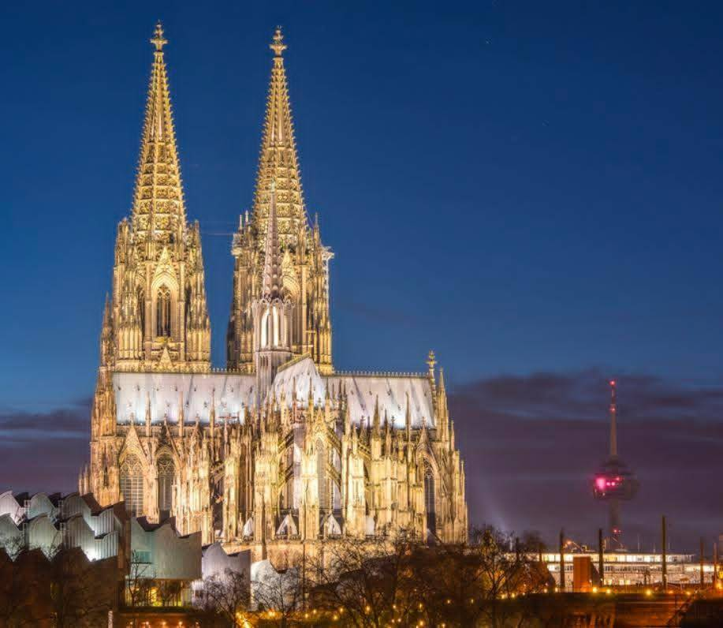

มหาวิหารโคโลญจน์ (Cologne Cathedral) เป็นมรดกโลก UNESCO สถาปัตยกรรมโกธิคสุดยิ่งใหญ่ใจกลางเมืองโคโลญจน์ ประเทศเยอรมนี ไฮไลต์คือการชมความงามของหอคอยคู่สูง 157 เมตร กระจกสีสเตนกลาสสุดวิจิตร แท่นบูชา "Three Kings" และชมวิวเมือง/แม่น้ำไรน์จากยอดหอคอย เข้าชมฟรี โดยปกติเปิดทุกวันเวลา 06:00-20:00 น. ไฮไลต์ที่เที่ยวห้ามพลาดภายในและรอบมหาวิหาร ชมภายในวิหาร: โถงกลางยาว \(144\) เมตร สถาปัตยกรรมสไตล์โกธิคที่ใช้เวลาก่อสร้างกว่า 600 ปีหีบสามกษัตริย์ (Shrine of the Three Kings): ห้องเก็บพระบรมสารีริกธาตุที่สำคัญที่สุดของศาสนจักรขึ้นยอดหอคอย (South Tower): ขึ้นบันได 533 ขั้น เพื่อชมวิวทิวทัศน์เมืองโคโลญจน์แบบ 360 องศา (มีค่าใช้จ่ายประมาณ 4-8 ยูโร)กระจกสีสเตนกลาส: หน้าต่างกระจกสีที่เก่าแก่และวิจิตรตระการตาที่สุดแห่งหนึ่งในยุโรปบริเวณรอบๆ: เดินเล่นย่านเมืองเก่า (Old Town), ชมสะพานโฮเฮนซอลเลิร์น (Hohenzollern Bridge) ที่มีแม่กุญแจคู่รักนับพัน, และเดินช้อปปิ้งใกล้ๆ สถานีรถไฟหลัก ข้อมูลการท่องเที่ยว ค่าเข้าชม: เข้าชมภายในโบสถ์ฟรี (หากจะขึ้นหอคอยหรือเข้าห้องเก็บสมบัติจะมีค่าใช้จ่าย)เวลาเปิด-ปิด: 06:00-20:00 น. (วันอาทิตย์เปิด 13:00 น. เพื่อให้ประกอบพิธี)การเดินทาง: ตั้งอยู่ติดกับสถานีรถไฟหลัก (Cologne Central Station) เดินเพียง 2 นาทีเวลาที่เหมาะสม: เที่ยวได้ตลอดทั้งปี แต่ช่วงคริสต์มาสจะมีตลาดนัดที่สวยงามมาก